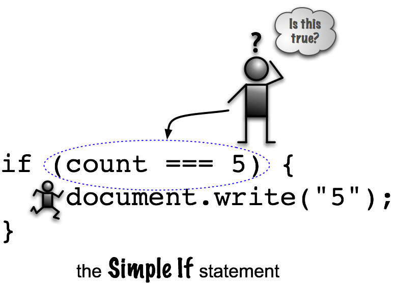

Simple if Statements
The if Statement
The simple IF statement is good for those situations in programming where we need to do something, but only under a certain condition. And if that condition isn't met, we don't do anything else, we just skip it and move on.
Think about a door. If it's locked, we have to unlock it.
IF the door is locked THEN unlock it ENDIF walk through door.
If the door is already unlocked, we don't have anything extra to do. So we can just skip the unlocking stuff and walk through the door.
In JavaScript, an IF statement looks like this:
// Basic "if" statement
if (some condition) {
// do something brilliant!
}
What is "some condition?"
After the if comes a boolean expression, something that's either true or false. We looked at that in learning unit 5. All of those equality and relational operators can be used.
// Boolean conditions
var count = 5;
if (count === 5) {
// count IS 5 so I'll do this:
document.write("The count is 5");
}
What happens?
The code inside of the curly braces ({}) will be run if the boolean expression is true.
The boolean condition can vary, based on our needs. Look at these statements:

if (count < 10) {
document.write("The count is less than 10");
}
if (typeof count === "number") {
document.write("The count is a number");
}
if (count >= 6) {
// Will this run?
document.write("count is >= 6");
}
Watch out for syntax. IF statements are compound statements.We don't use semicolons after the closing curly brace like we do with other statements. However, statements inside of the IF statements do have semicolons.
You'll be expected to format your IF statements just like the examples you see in the labs, including the appropriate spacing. No tabs!
Full Simple if Example
Here's a more complex example: Read and Sort Three Characters
Be sure to read this carefully and PRACTICE.
Remember, a Simple IF statement is for adding an additional processing step to a program in response to a condition. If that condition is met, the additional processing should happen.
But more importantly, if the condition is not met then no additional processing needs to occur.
Now some Labs, of course.
"The only thing that interferes with my learning is my education" - Albert Einstein